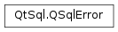

QSqlError¶
Synopsis¶
Functions¶
- def
__eq__(other) - def
__ne__(other) - def
databaseText() - def
driverText() - def
isValid() - def
nativeErrorCode() - def
number() - def
setDatabaseText(databaseText) - def
setDriverText(driverText) - def
setNumber(number) - def
setType(type) - def
swap(other) - def
text() - def
type()
Detailed Description¶
The
PySide2.QtSql.QSqlErrorclass provides SQL database error information.A
PySide2.QtSql.QSqlErrorobject can provide database-specific error data, including thePySide2.QtSql.QSqlError.driverText()andPySide2.QtSql.QSqlError.databaseText()messages (or both concatenated together asPySide2.QtSql.QSqlError.text()), and thePySide2.QtSql.QSqlError.nativeErrorCode()andPySide2.QtSql.QSqlError.type().
-
class
PySide2.QtSql.QSqlError(other)¶ -
class
PySide2.QtSql.QSqlError([driverText=""[, databaseText=""[, type=NoError[, errorCode=""]]]]) -
class
PySide2.QtSql.QSqlError(driverText, databaseText, type, number) Parameters: - number –
PySide2.QtCore.int - errorCode – unicode
- other –
PySide2.QtSql.QSqlError - type –
PySide2.QtSql.QSqlError.ErrorType - databaseText – unicode
- driverText – unicode
Creates a copy of
other.Constructs an error containing the driver error text
driverText, the database-specific error textdatabaseText, the typetypeand the error codecode.Note
DB2: It is possible for DB2 to report more than one error code. When this happens,
;is used as separator between the error codes.Constructs an error containing the driver error text
driverText, the database-specific error textdatabaseText, the typetypeand the optional error numbernumber.- number –
-
PySide2.QtSql.QSqlError.ErrorType¶ This enum type describes the context in which the error occurred, e.g., a connection error, a statement error, etc.
Constant Description QSqlError.NoError No error occurred. QSqlError.ConnectionError Connection error. QSqlError.StatementError SQL statement syntax error. QSqlError.TransactionError Transaction failed error. QSqlError.UnknownError Unknown error.
-
PySide2.QtSql.QSqlError.databaseText()¶ Return type: unicode Returns the text of the error as reported by the database. This may contain database-specific descriptions; it may be empty.
-
PySide2.QtSql.QSqlError.driverText()¶ Return type: unicode Returns the text of the error as reported by the driver. This may contain database-specific descriptions. It may also be empty.
-
PySide2.QtSql.QSqlError.isValid()¶ Return type: PySide2.QtCore.boolReturns
trueif an error is set, otherwise false.Example:
model = QSqlQueryModel() model.setQuery("select * from myTable") if model.lastError().isValid(): print model.lastError()
See also
-
PySide2.QtSql.QSqlError.nativeErrorCode()¶ Return type: unicode Returns the database-specific error code, or an empty string if it cannot be determined.
-
PySide2.QtSql.QSqlError.number()¶ Return type: PySide2.QtCore.intReturns the database-specific error number, or -1 if it cannot be determined.
Returns 0 if the error code is not an integer.
Warning
Some databases use alphanumeric error codes, which makes unreliable if such a database is used.
Use
PySide2.QtSql.QSqlError.nativeErrorCode()instead
-
PySide2.QtSql.QSqlError.__ne__(other)¶ Parameters: other – PySide2.QtSql.QSqlErrorReturn type: PySide2.QtCore.boolCompare the
othererror’s values to this error and returnstrueif it is not equal.
-
PySide2.QtSql.QSqlError.__eq__(other)¶ Parameters: other – PySide2.QtSql.QSqlErrorReturn type: PySide2.QtCore.boolCompare the
othererror’s values to this error and returnstrue, if it equal.
-
PySide2.QtSql.QSqlError.setDatabaseText(databaseText)¶ Parameters: databaseText – unicode Sets the database error text to the value of
databaseText.Use
PySide2.QtSql.QSqlError(constPySide2.QtCore.QString&PySide2.QtSql.QSqlError.driverText(), constPySide2.QtCore.QString&PySide2.QtSql.QSqlError.databaseText(),QSqlError.ErrorTypetype, int number) instead
-
PySide2.QtSql.QSqlError.setDriverText(driverText)¶ Parameters: driverText – unicode Sets the driver error text to the value of
driverText.Use
PySide2.QtSql.QSqlError(constPySide2.QtCore.QString&PySide2.QtSql.QSqlError.driverText(), constPySide2.QtCore.QString&PySide2.QtSql.QSqlError.databaseText(),QSqlError.ErrorTypetype, int number) instead
-
PySide2.QtSql.QSqlError.setNumber(number)¶ Parameters: number – PySide2.QtCore.intSets the database-specific error number to
number.Use
PySide2.QtSql.QSqlError(constPySide2.QtCore.QString&PySide2.QtSql.QSqlError.driverText(), constPySide2.QtCore.QString&PySide2.QtSql.QSqlError.databaseText(),QSqlError.ErrorTypetype, int number) insteadSee also
-
PySide2.QtSql.QSqlError.setType(type)¶ Parameters: type – PySide2.QtSql.QSqlError.ErrorTypeSets the error type to the value of
type.Use
PySide2.QtSql.QSqlError(constPySide2.QtCore.QString&PySide2.QtSql.QSqlError.driverText(), constPySide2.QtCore.QString&PySide2.QtSql.QSqlError.databaseText(),QSqlError.ErrorTypetype, int number) insteadSee also
-
PySide2.QtSql.QSqlError.swap(other)¶ Parameters: other – PySide2.QtSql.QSqlErrorSwaps error
otherwith this error. This operation is very fast and never fails.
-
PySide2.QtSql.QSqlError.text()¶ Return type: unicode This is a convenience function that returns
PySide2.QtSql.QSqlError.databaseText()andPySide2.QtSql.QSqlError.driverText()concatenated into a single string.
-
PySide2.QtSql.QSqlError.type()¶ Return type: PySide2.QtSql.QSqlError.ErrorTypeReturns the error type, or -1 if the type cannot be determined.
See also
© 2018 The Qt Company Ltd. Documentation contributions included herein are the copyrights of their respective owners. The documentation provided herein is licensed under the terms of the GNU Free Documentation License version 1.3 as published by the Free Software Foundation. Qt and respective logos are trademarks of The Qt Company Ltd. in Finland and/or other countries worldwide. All other trademarks are property of their respective owners.